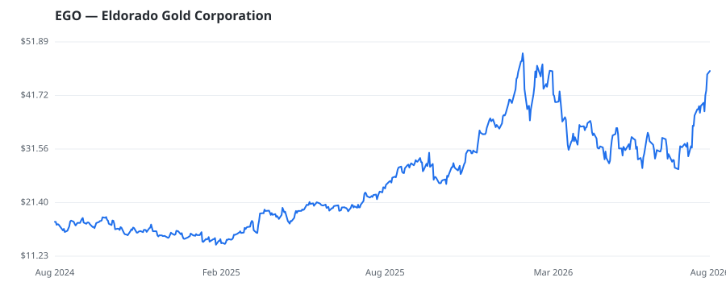

bullish · bearish · n/a — dots: price>SMA10 · SMA10>SMA50 · SMA50>SMA200 · up>down volume (20d)
Other · large cap

Eldorado Gold Corp is a gold and base metals producer with mining, development, and exploration operations in Turkey, Canada, and Greece. It has a portfolio of high-quality assets and long-term partnerships with local communities. Some of its projects include Kisladag, Efemcukuru, Skouries; Perama Hill, and Certej projects. It has three geographical segments: The Turkiye reporting segment includes the Kisladag and the Efemcukuru mines and exploration activities in Turkiye. The Canada reporting segment that derives maximum revenue, includes Lamaque and exploration activities in Canada. The Gree · website
This name produced 0.4% of the ranked funds’ total alpha.
| Fund | Fund alpha vs SPY | Position | % of book |
|---|---|---|---|
| L1 Capital Pty Ltd | +58% | $448M | 15.1% |
Hedge data: SEC EDGAR 13F · ranked funds beat SPY in >50% of their quarters · fund alpha = mirror-portfolio return minus SPY.